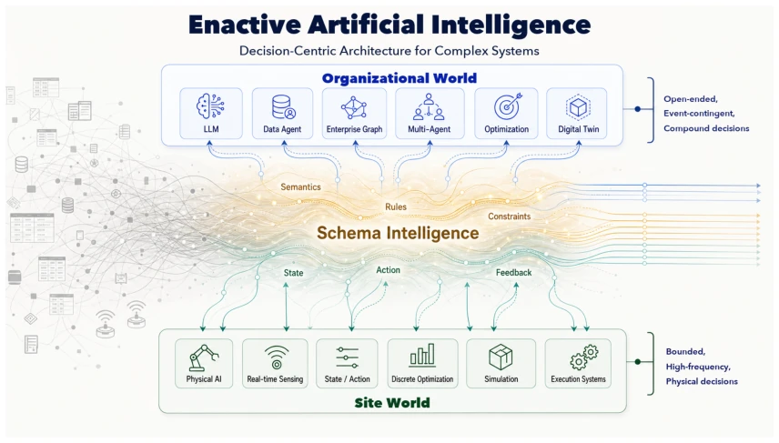
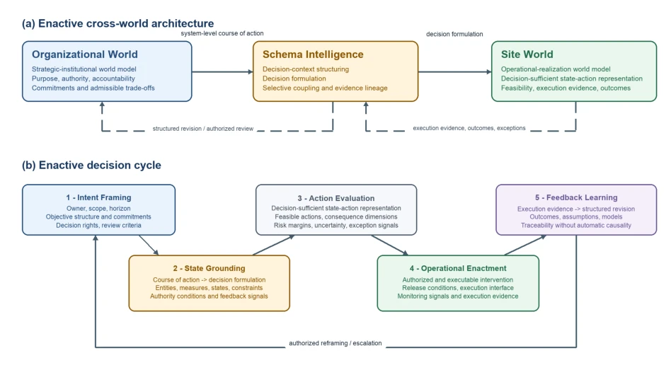
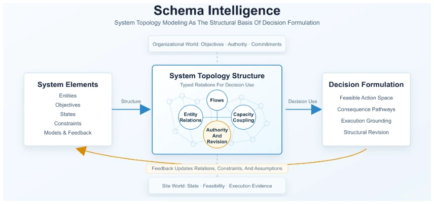

这篇论文试图用“具身智能”的哲学包装企业决策系统，把传统的运筹优化和管理逻辑重新定义为“Enactive AI”。亮点在于强调了复杂系统中的系统级反馈和责任归属，而非单纯的模型生成。它指出 AI 不应只是预测模块，而应成为承载行动的真实世界接口。但吐槽点也很明显：它更像是一个概念框架（Conceptual Framework），缺乏具体的算法实现或物理实体交互，所谓的“具身”更多是组织层面的“行动”而非机器人。对于搞机器人控制的读者来说，这文可能有点“虚”，毕竟没见着机械臂。不过对工业 AI 落地确实有启发，至少提醒了别光看模型准确率，得看系统后果。它试图将 AI 从模型能力扩展到系统感知行动，但落地细节仍需观察。
This paper attempts to package enterprise decision systems with the philosophy of "Embodied Intelligence", redefining traditional operations research optimization and management logic as "Enactive AI". The highlight lies in emphasizing system-level feedback and accountability in complex systems, rather than mere model generation. It points out that AI should not merely be a prediction module, but should become a real-world interface carrying action. However, the criticisms are also obvious: it is more like a Conceptual Framework, lacking specific algorithmic implementation or physical entity interaction; the so-called "Embodied" refers more to organizational-level "action" rather than robots. For readers working on robot control, this paper may seem somewhat "vague", after all, no robotic arms were observed. However, it is indeed inspiring for industrial AI deployment, at least reminding one not to look only at model accuracy, but to consider system consequences. It attempts to extend AI from model capability to system perception and action, but implementation details still require observation.
研究动机Motivation
现有 AI 从预测生成转向行动，但在复杂系统中，局部合理的决策会导致系统级不可靠。文献指出，当表征、可行性、问责和反馈未组织在一起时，AI 决策可能失效 (Dressel and Farid, 2018; Royal Commission into the Robodebt Scheme, 2023)。复杂系统具有非线性、反馈延迟和层级结构 (Simon, 1962; Perrow, 1984)。现有工作多关注任务级优化，缺乏对系统动态、约束和后果的整合，导致决策无法在真实商业环境中可靠执行。AI 输出进入决策系统后，常被转化为目标、权利、资源等，但缺乏系统视角，使得局部决策在系统层面不可靠。
Existing AI is shifting from predictive generation to action, but in complex systems, locally rational decisions lead to system-level unreliability. Literature points out that when representation, feasibility, accountability, and feedback are not organized together, AI decisions may fail (Dressel and Farid, 2018; Royal Commission into the Robodebt Scheme, 2023). Complex systems possess nonlinearity, feedback delay, and hierarchical structures (Simon, 1962; Perrow, 1984). Existing work mostly focuses on task-level optimization, lacking integration of system dynamics, constraints, and consequences, leading to decisions that cannot be reliably executed in real business environments. After AI output enters the decision system, it is often converted into goals, rights, resources, etc., but lacking a system perspective makes local decisions unreliable at the system level.
Proposes a four-element architecture: 1. Organizational World defines strategic logic; 2. Site World defines physical execution models; 3. Schema Intelligence serves as a coupling mechanism, transforming organizational intent into executable constraints; 4. Enactive Decision Cycle drives dynamic updates. Core capabilities include system-based prediction, consequence-based decision, and system-level judgment. Schema Intelligence utilizes graph structures (e.g., GOFM) to maintain decision topology, ensuring local actions understand system effects. It connects organizational meaning with operational entities through semantic alignment, process models, and data integration. Organizational World handles purpose, authority, and commitment; Site World handles state, constraints, and feedback. The decision cycle keeps reasoning, intent, and governance in motion, ensuring decisions are updated as the system changes.

Figure 1: Enactive AI Architecture

Figure 2: Enactive AI as an operational decision system. Panel (a) distinguishes organizational framing, decision structuring, and bounded operational representation. Solid arrows show the translation from objectives and decision rights to an operational decision formulation; dashed arrows show how outcomes and exceptions support traceability and revision. Panel (b) presents an analytical decomposition of the recurring decision process.

Figure 3: Schema Intelligence as system topology modeling for operational decision formulation.
The abstract mentions three industrial cases (e-commerce, manufacturing supply chain, telecom), but the main text is truncated and does not show specific data. Baseline comparisons or ablation studies cannot be evaluated. Only the framework's aim to solve resource allocation, risk management, and collective future shaping problems can be confirmed. Lack of quantitative metrics makes actual effects questionable, needing to wait for the full version to verify its claims of "governable, scalable". The text mentions demonstrating practical value, but does not provide specific performance improvement data, only qualitatively describing its supportive role in complex systems.